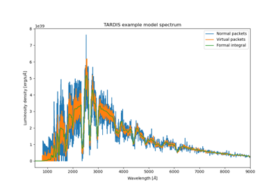

2014 Examples
¶
Below is a gallery of examples.

Tardis 2014 Example
¶
Gallery generated by Sphinx-Gallery
tardis-setups
Navigation
Galleries:
2014 Examples
Tardis 2014 Example
Year 2016 Results
Related Topics
Documentation overview
Previous:
Welcome to tardis-setups’s documentation!
Next:
Tardis 2014 Example
Quick search